Top plots are 10,000 signal events that survive our cuts.
Bottom plots are 10,000 background events that survive our cuts.
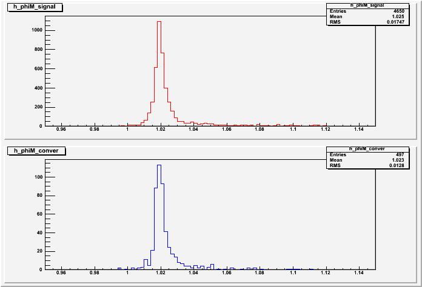
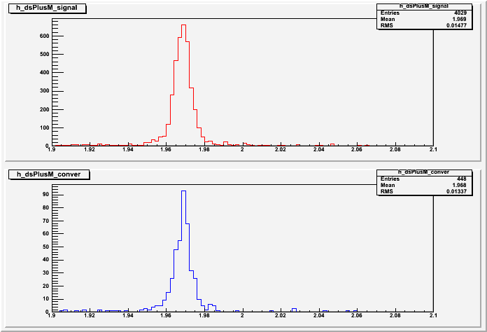
abs(phiM-1.0195)<0.015
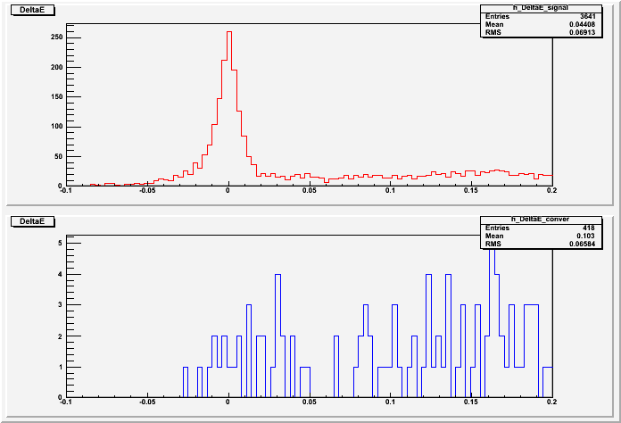
abs(phiM-1.0195)<0.015 && abs(dsPlusM-1.96849)<0.02
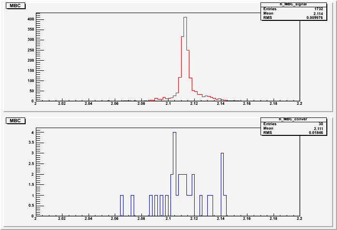
abs(phiM-1.0195)<0.015 && abs(dsPlusM-1.96849)<0.02 && abs(DeltaE)<0.05
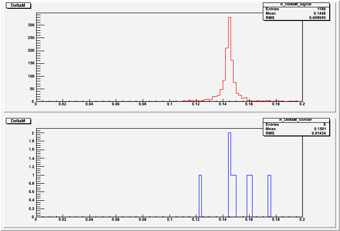
abs(phiM-1.0195)<0.015 && abs(dsPlusM-1.96849)<0.02 && abs(DeltaE)<0.05 && abs(MBC-2.112)<0.005
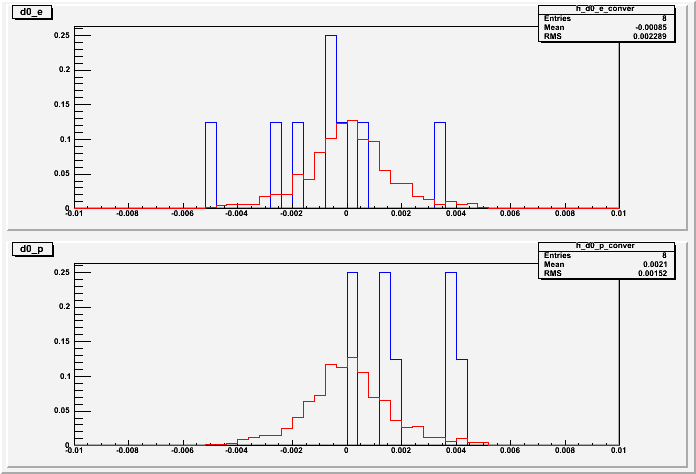
abs(phiM-1.0195)<0.015 && abs(dsPlusM-1.96849)<0.02 && abs(DeltaE)<0.05 && abs(MBC-2.112)<0.005
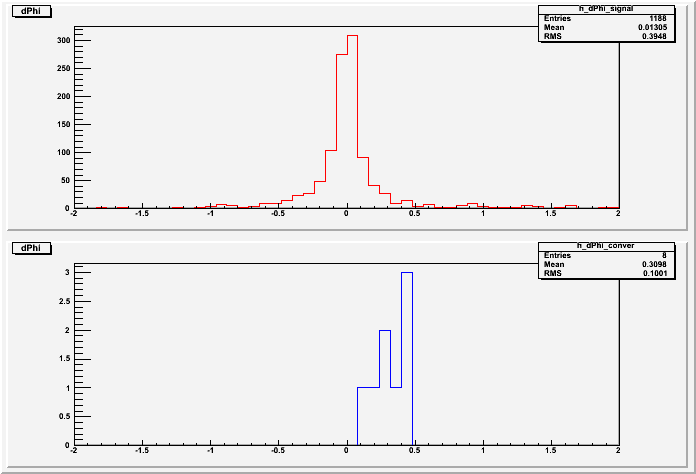
abs(phiM-1.0195)<0.015 && abs(dsPlusM-1.96849)<0.02 && abs(DeltaE)<0.05 && abs(MBC-2.112)<0.005
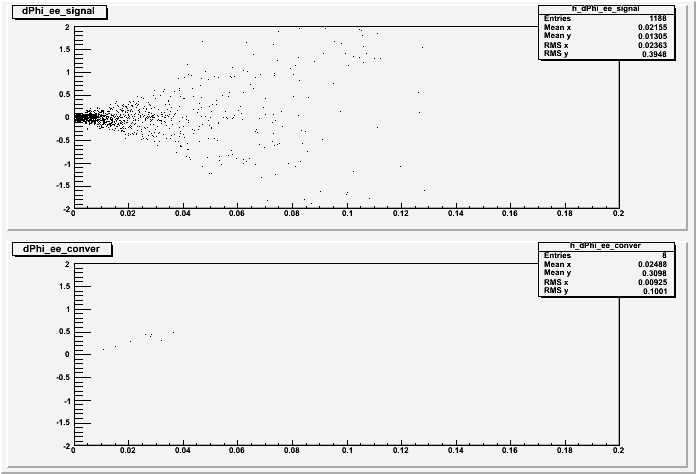
abs(phiM-1.0195)<0.015 && abs(dsPlusM-1.96849)<0.02 && abs(DeltaE)<0.05 && abs(MBC-2.112)<0.005
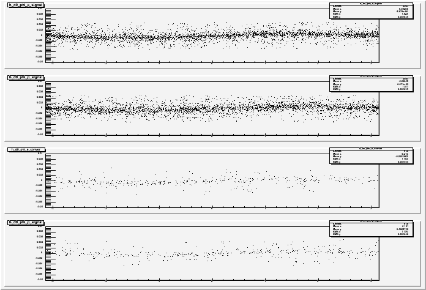
abs(phiM-1.0195)<0.015 && abs(dsPlusM-1.96849)<0.02
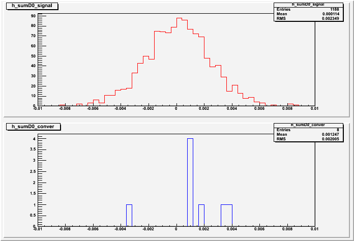
abs(phiM-1.0195)<0.015 && abs(dsPlusM-1.96849)<0.02 && abs(DeltaE)<0.05 && abs(MBC-2.112)<0.005
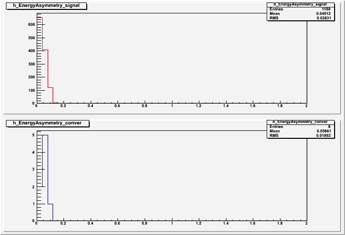
abs(phiM-1.0195)<0.015 && abs(dsPlusM-1.96849)<0.02 && abs(DeltaE)<0.05 && abs(MBC-2.112)<0.005
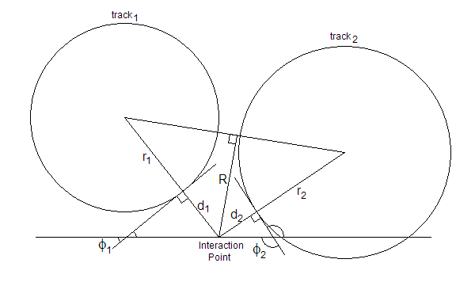
We can calculate R, given phi1, phi2, r1, r2, d1 and d2.
let a1 = r1 + d1
let a2 = r2 + d2
let theta = pi - (phi2 - phi1)
then,
R = (a_1*a_2*sin(theta))/sqrt(a_1^2 + a_2^2 - 2*a_1*a_2*cos(theta))